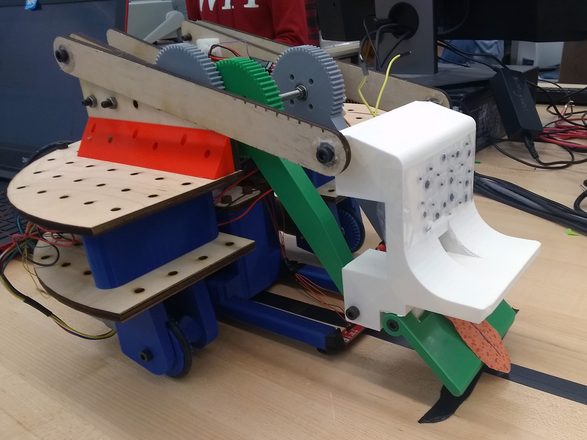
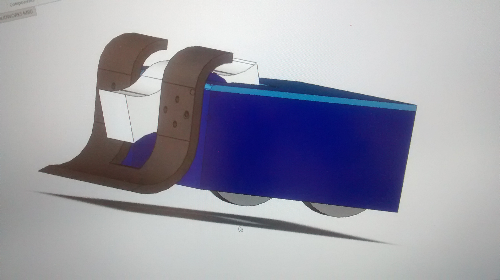

I'm majoring in robotics, and I'm now in my junior year. I'm currently taking two robotics courses: ROS Mapping and Musical Robotics. The musical robotics one I've been looking forwards to for a while, and I think I'll be working on an automated harmonium the professor has been developing.
This was by far the most fun I have had and the most I have ever understood a robotics course. The topic of this course was multi-joint actuation, and it was a lot of programming and even more math.
We didn't design any part of the hardware for this class ourselves; the arm was pre-designed, though I assembled and wired it myself. The microcontroller used was an itsybitsy.

The programming for this arm was done in MATLAB. It was mostly number-crunching: calculating the forward kinematics (predicting the location of the gripper given the servo values), the inverse kinematics (determining the servo values required to move the gripper to a desired location) and trajectory control between points in the workspace. The final project was to use MATLAB's vision processing systems and a webcam to identify, pick up, and sort the colored plastic balls provided. Here's a video of the arm in action:
I wish I had photos or videos of this robot, but this bot was definitely the most work I had personally put into any of these projects, and I was so burned out by the end that I simply disassembled what we had and slept for a week instead. :/ Such is group projects.
In terms of the wheels/base/processor, it was identical to Argus. Its task was to traverse a grid of model buildings and streets, avoiding roadblocks and looking for a beacon in one of the buildings. It met these objectives okay, but was plagued by nonstop crashes, mystery null pointer errors, and restarts that made debugging a real nightmare.
Our final project was fairly simple compared to a lot of other teams', but its unambitious physical design meant it was a lot more functional than other teams' by the time we had to demonstrate it. It was a wirelessly midi-controlled drumstick of adjustable height, using a Raspberry Pi with a piezo sensor to determine when it had struck the surface of the drum.

The biggest strength of this design was that this minimalist robot "player" was not tied to its instrument; by adjusting the stand's height, it could be used to play a drum of any height, tilt, or orientation. The piezo sensor, pressed against the drum's surface, let the stick know when contact is made and instantly let it release all force and bounce back to avoid stalling. Like a human drummer, it didn't need to know any exact measurements ahead of time; it adjusted its velocity based on realtime feedback. Its design was supposed to be optimized for live performance with live players.
Here's a clip of it running a test pattern.
Improvements that needed to be made: a compact housing for the electronics (we put them on a music stand so that the wiring would be accessible during building/debugging) and a backstop to ensure that the drumstick did not lose time between beats by swinging too far upwards (we simply ran out of time for that and had to return the motors). Altogether, it was a fun project.
Here's a video of another group's project that I thought was neat. It's a simple sort of programmable music box design.
Video of Argus in action
The final project for Robotics 2001. The wheels and base were given to us as a kit to assemble, but the 4-bar lifting arm was designed and fabricated by us based on our calculations. The bot used an Arduino Uno and was programmed in C.
Argus' task was to be a hypothetical helper bot on a world with two suns, where solar panels have to be mounted on a roof at two different angles. Argus had to take metal and plastic panels (the solar panels) and autonomously place/remove them on pegs at 45 and 25 degrees.
Basic instructions of which panel to take, which angle to drop it off at, and which side of the field to drop it off on were used to queue instructions for the state machine. The robot also paused for remote approval before taking or releasing a plate.
APRIL 2019: Tim the Pizza Bot

The final project for Robotics 1001. Tim was constructed from laser-cut wood parts and VEX pieces. It had both autonomous and teleoperated modes, and ran off an Arduino Mega board.
The task of the robot was to deliver "pizzas" (5in x 5in x 1in blocks of wood) to "dorms" (a series of shelves). The arm raised and lowered and the wheels on the grabber either drew in or expelled the "pizza".
Here's a video of one of the rounds, in which Tim drops the last pizza moments before achieving the highest-scoring play of the game. :'( Please excuse the terrible camerawork and the meme-y title.
SEPTEMBER 2018: Dozer's Revenge
Built for a 48-hour combat robotics hackathon, this guy was modeled after unofficial FRC mascot Dozer, with an added vertical spinner.

Oh, and ANGRY EYEBROWS. Man, he's adorable. The wheel armoring had to be sheared off to fit weight requirements and get the wheels on in time, so we gave him silver "hubcaps", which were just spraypainted giant googly eyes.
By an accident of wiring, Dozer's steering was installed backwards, so he was sort of confusing and clumsy to drive, but he did alright for himself.
Videos of Dozer in action: (X) (X) (X) (X)
I just found out that Hebocon made a neocities page, so if you found the faulty antics of Dozer interesting, then check out these even WORSE, FUNNIER robots!
If you like robot-bashin', there's always Battlebots. The 2018 winner, Bite Force, was built by a guy from my school.
{kind=link}